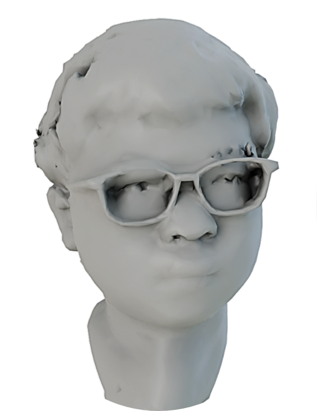
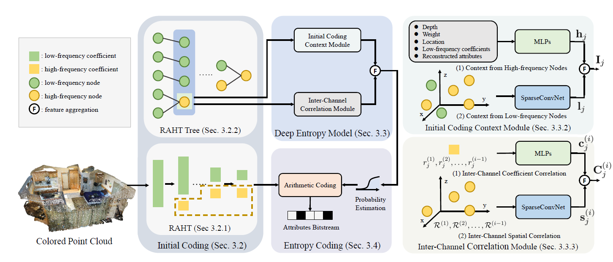
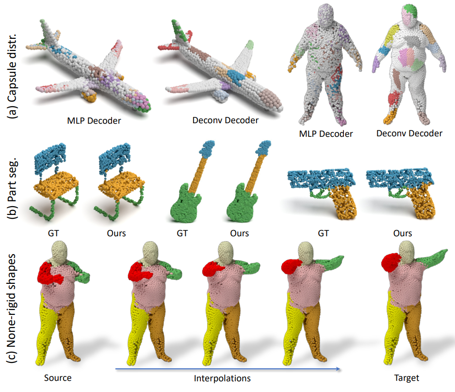
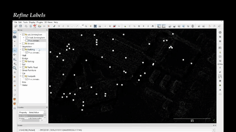

|
Guangchi Fang 方广驰
Hey, I'm Guangchi, a passionate explorer of 3D vision research.
I just received my master's degree from Sun Yat-sen University,
with Prof. Yulan Guo.
Previously, I obtained my B.Eng degree from
University of Electronic Science and Technology of China.
Email /
Github /
Google Scholar /
YouTube
|
 |
|
Research
I am interested in 3D vision and deep learning. Currently, I focus on 3D data processing,
typically for point cloud and neural representation.
|
|  |
3DAC: Learning Attribute Compression for Point Clouds
G. Fang, Q. Hu, H. Wang, Y. Xu, Y. Guo
CVPR 2022
Paper /
Code /
Presentation /
Poster
We study the problem of attribute compression for large-scale unstructured 3D point clouds. Through an in-depth exploration of the relationships between different encoding steps and different attribute channels, we introduce a deep compression network, termed 3DAC, to explicitly compress the attributes of 3D point clouds and reduce storage usage in this paper.
|
|  |
3DPointCaps++: Learning 3D Representations with Capsule Networks
Y. Zhao, G. Fang*, Y. Guo, L. Guibas, F. Tombari, T. Birdal
IJCV 2022 (* indicates equal contribution)
Paper /
Code /
Demo
We present 3DPointCaps++ for learning robust, flexible and generalizable 3D object representations. Our algorithm builds a structured latent space with a 3D capsule encoder and learns a novel decoder on the individual latent sub-spaces with a cluster loss. Our network is able to tackle the challenging tasks of part segmentation, part interpolation/replacement as well as correspondence estimation across rigid / non-rigid shape, and across / within category.
|
|  |
SQN: Weakly-Supervised Semantic Segmentation of Large-Scale 3D Point Clouds
Q. Hu, B. Yang, G. Fang, A. Leornadis, Y. Guo, N. Trigoni, A.
Markham
ECCV 2022
ArXiv /
Code /
Demo /
Annotation
We propose a new weak supervision method to
implicitly augment the total amount of available supervision signals, by leveraging the
semantic similarity between neighboring points. Extensive experiments demonstrate that
the proposed Semantic Query Net- work (SQN) achieves state-of-the-art performance on six large-scale open datasets under weak supervision schemes, while requiring only 1‰ labeled points for training.
|
|